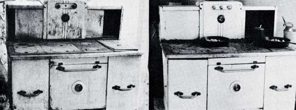

So you've finally moved to your homestead and have acquired that indispensable item which was Great-Grandmother's pride and joy: a wood cookstove. Unless you grew up in a very rural area and have used such a device before, you'll probably approach cooking on it-and especially baking-with trepidation.
Well, relax. There's no mystery involved, only common sense. True, you won't find any magic dial that brings the oven to exactly 375° F and keeps it there until you shut it off . . . but a little experimentation will get the temperature within 25° of the desired figure, and for a start that's all you need.
If you buy a used cookstove (and you probably will, since new ones cost anywhere from $400 up) you should keep a few points in mind when you hunt.
In particular, beware of stoves with warped top surfaces. The distorted metal will leak smoke, and is often a sign that coal has been burned to produce a very hot fire. Usually this also means that the walls and grates in the firebox are damaged. (These are among the first things to go on any old stove.)
Fire walls, if not too badly damaged, can be repaired with special fire-wall cement (obtainable at your local general store). Grates are a harder problem. If you have a model made by a company, that's still in business, you can get replacements. If the manufacturer has folded, however, you may have to search until you find another old stove you can cannibalize.
Don't worry too much about rust, unless the surface of your stove is badly pitted. A superficial coating will burn off in use, and blacking will restore that shiny finish you envisioned.
When you get your purchase home (and you're on your own as far as that goes), take off all easily removable parts-eyes (lids), firebox cover, hot water reservoir, etc.-and give the stove a thorough cleaning. Tighten up all loose bolts at the same time. Disassembling your "new" kitchen range will also give you an opportunity to examine its drafts. Models differ in this respect, but the basic idea remains the same.
My own stove, for example, is a big "Home Comfort". . . a fine piece of equipment from a firm that closed up shop not too long ago. It has three main drafts, with controls located a the center of the warming closets directly below the stovepipe.
The middle knob operates the main damper: a flat, round piece of metal-pierced with holes-that fits into the stovepipe When open, it permits smoke and heat to flow freely up the chimney. Closed, it helps retain heat but still allows smoke to, escape. Actually, this part is missing on my stove and I haven't really felt its lack.
On the left (or perhaps, in your case, on the side of the stove) is a knob that regulates the entry of air to the firebox by opening and shutting a small grille on the back of the range. Note that this grate has nothing to do with the others (which let ashes drop through) at the bottom of the same compart ment.
The right-hand knob on my range directs the flow of heat for baking. When it's turned to "open", hot air moves under the stove's top surface, over the oven and directly out the chimney. Closing the draft forces heat above the oven and down its far side next to the hot water reservoir, where it ever tually escapes below and behind the baking area. This flu should be shut only when you want to turn out a batch a bread or whatever, or to warm the room in winter.
When you start a fire in your cookstove, all the grates, flue and dampers should be open to allow a free flow of air and t prevent smoking. If black clouds billow out anyhow, check the ash box. That may be your problem if it's more than three quarters full (in which case you'll also find it difficult to build a good hot fire).
Everything's clear and the stove persists in smoking? The cause may be the wind striking the chimney at exactly the wrong angle. Just grin and bear it. Of course, if the problem occurs constantly at certain seasons or whenever the breez, comes from a particular direction, you may want to ad another elbow to the stovepipe to minimize the downdraft This may make it difficult to start a fire when the stove t cold, but it sure beats being smoked out of the kitchen.
OK. You've set up your stove, you have a theoretical under standing of how the drafts work and you've finally got the hang of building a fire. Now you want to bake something. Start with an easy item like biscuits . . . an angel food cake difficult enough in a gas range.
First of all, remember that a wood-burning range will take somewhat longer to heat up than you're accustomed to. Start the fire, in other words, before you start the biscuits. Open all drafts, get the kindling blazing and add some larger pieces of wood. You may want to keep the air vent to the firebox open for a while until the fire is really roaring. Then shut that draft and listen to your cookstove heat up. Yes, listen! The iron expands and contracts as it heats and cools, with occasional creaking sounds that are very pleasant company early in the morning.
When you have a good flame going and the stove has heated up some, close the flue that forces hot air to the oven. Keep in mind that-before you take this step-the cookstove must be hot enough to draw the heat above, around and below the baking compartment. Otherwise it will smoke.
A cookstove usually has a dial on the oven door which registers the internal temperature as "slow" (200° to 325°), "moderate" (325° to 400°) and "hot" (400° on up). Some really early all-cast-iron models, however, have no gauges at all. Old cookbooks used to give such helpful directions as, "The oven is hot enough for bread when you can just hold your elbow in for a count of ten." Great-Grandma was accustomed to that sort of thing, but it's probably not much use to you. If you're fortunate enough to own one of those very old and very beautiful ranges, though, you can easily solve the problem by purchasing an oven thermometer.
For biscuits you need a hot oven, say three-quarters of the way between "moderate" and "hot" on the dial. Make sure the indicator is at least at "moderate" and is climbing before you start mixing your dough. As you work, check the firebox occasionally to see if it needs more wood. If you let the fire go too long and it's burning a little low, add more fuel and reopen the firebox grate until you have a good blaze. In case the oven has overheated, open the flue to let heat out the chimney. In a real emergency you can open the oven door too.
I began my baking efforts with biscuits, pie and bread. Only after I felt I had some working knowledge of my stove did I attempt a cake. Then I chose an easy recipe . . . a heavy, moist spice cake that doesn't require delicate temperature control. It's also inexpensive to make, and well adapted to those early days on your homestead when you may lack milk and eggs. It works equally well with light or dark molasses or even sorghum. Here's the recipe:
4 cups flour
2 cups sugar
1 teaspoon salt
1 cup shortening
Mix the flour, sugar and salt, cut in the shortening and reserve 1 cup of the mixture for the topping.
1 teaspoon baking soda
1 cup molasses
2 cups hot water
Combine the above ingredients and add them to the remaining dry mixture. The batter will be very thin. Pour it into a 12" X 9" X 2" greased pan. Sprinkle the top with the 1 cup of reserved dry ingredients to which the following has been added:
1 teaspoon cinnamon
1 /2 teaspoon cloves
1 /2 teaspoon nutmeg
Bake the cake at 350° for 40 to 50 minutes.
One interesting point about cookstove baking is that the heat comes from the top and sides, instead of from just the bottom of the oven as in a gas range. I found that my bread remains softer underneath than I had expected, even though the loaf is baked through and the top has a nice crust. Also, it isn't necessary to turn the pans around in the oven to prevent uneven browning.
Wood stove cookery is more than merely exchanging gas or electric heat for chunks and kindling. The character of the stove affects the whole gamut of operations involved in running a kitchen. For example, it wasn't purely as an aid to digestion that Great-Grandma served the big meal-called dinner, not lunch-at noon and a smaller, often cold supper in the evening. Once she fired up the stove for breakfast, you see, it was far more practical to keep it hot for dinner than to let the fire go out and stoke it up again in late afternoon. Moreover, with refrigeration at a minimum, leftovers from midday were better finished off at supper than held overnight. The noontime biscuits, placed in the warming ovens, might even still be warm at the close of day.
In summer, the stove's fire was allowed to go out after dinner and wasn't relit until the following morning. One hot afternoon spent sweating over a cookstove to prepare a fancy evening meal will convince you of the soundness of that reasoning.
Incidentally, if you're lucky enough to acquire two cookstoves, by all means follow Great-Grandma's example and set one up as a "summer kitchen" outside the house or in a shed. You and your living space will both be cooler after a day with the canning jars. I installed my first stove on the porch where it could smoke to its heart's content while I was getting used to its idiosyncrasies. A word of caution, though: Don't put the range under a tree. The smoke will kill it.
Great-Grandma had a few other tricks up her sleeve, too. Down on the farm, all baking was done at home . . . and the folks expected a lot of it: pies, breads, cakes and cookies, besides the ubiquitous biscuits and corn bread made fresh for breakfast and dinner. Once a wood stove is heated, it will stay hot for a long time . . . so, to save time, energy and wood, that wise farm wife did her week's quota on one day and stored the results in those cabinets-now prized antiques-called pie safes. Such storage units were wood-framed, with panels made of pierced tin which allowed the goodies to "breathe" and keep fresh while shutting out the flies. It takes more energy and organization than I have right now to emulate such a baking regimen . . . but every time I fire up my "Home Comfort" to produce a single pie, I appreciate the wisdom of the weekly routine.
Oh, by the way-if you've ever wondered why old farmers, cowboys and prospectors always fried their steaks in skillets ("What a dreadful way to treat a good steak," you thought, back in the days when you could afford steak)-well, now you know the answer: There are no broilers in cookstoves.
Another small drawback of the wood stove is that soot collects below the oven and has to be cleaned out occasionally by opening a trap down there and fishing the waste out with a poker or long metal rod. Spread plenty of newspaper on the floor . . . it's a messy job.
At times other than cleaning day, though, cookstoves do offer real advantages (aside from the savings on gas or electric bills). For one thing, the cooking surface is immense. If you've ever tried to can on the average four-burner range-with the huge canner on one flame, the pot of pickles on another and the hot water for jar tops on a third, while you tried to squeeze in a pan of rice for the day's meal on the fourth-you'll bless that big, hot stove top. Furthermore, the heat rises to the warming closets or ovens above the range . . . and there's no better place to set bread to rise or to keep food warm. And finally, thanks to the reservoir-and mine holds gallons-you'll always have hot water (except perhaps first thing in the morning).
So go ahead . . . escape the future fuel crisis. Get that "Family Sunshine" or "Foster Agate" or "Home Comfort" wood-burning cookstove. You'll be awfully proud of the biscuits, even if they are a little burnt on top.
(EDITOR'S NOTE: For more complete instructions in the art of firing up, baking in and otherwise learning to live with and love a wood-fueled cookstove, see the seven page feature on the subject in MOTHER NO. 7)
|
 |
|
|